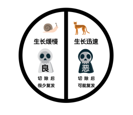

小心！宫颈癌可能就在你身边！
如今，人与世间万物的距离越来越近了：和偶像只隔着一个手机屏幕的距离，和环游世界只隔着一张机票的距离，和山珍海味只隔着一份外卖的距离……那、和宫颈癌呢？不要逃避，不要觉得宫颈癌离你还很遥远，其实，宫颈癌很有可能就在你身边，不要等到查出CIN了再追悔莫及……
可能你要问了，CIN是什么？在介绍CIN前，先来为大家科普下肿瘤的概念。人有好坏之分，肿瘤也有良性和恶性之别，良性肿瘤生长比较缓慢，在切除后很少复发；恶性肿瘤（也就是我们平常所说的癌症）生长比较快，切除后依旧有复发的风险。

癌症的形成很漫长，它的发展会经历量变到质变、渐变到突变的过程。而癌前病变，是由良性病变到恶性病变的中间状态，在某些因素持续作用下有可能会变成恶性肿瘤，但如果能及时处理掉，则癌前病变又能恢复到正常状态。它是一种可逆改变的状态。
CIN就是宫颈癌的癌前病变，又称宫颈上皮内瘤变。就是宫颈表面的一些细胞变得有点儿像癌细胞了。根据这个“有点儿像癌细胞”的细胞数量，我们可以把宫颈上皮内瘤变分成CINⅠ、CINⅡ、CINⅢ等不同等级。CIN数字越小，自然消退的可能性越大；数字越大，则发展为癌的几率越大。癌前病变的结局可能有三种情况：好转甚至消退、持续存在、进一步恶化。
虽说CIN不是癌，也不是癌的初期，但姑娘们也不要掉以轻心哦。CIN一般没有明显的临床症状，部分表现为白带增多、偶有接触性出血，部分患者宫颈光滑，还有部分患者会表现为不同程度的宫颈炎。这就很容易被当作是小事而忽视掉。以至于后面检测出是CIN后，很多患者会陷入自我怀疑，心理状态受到严重影响。
其实，即便患了CIN，姑娘们也大可不必惊慌失措。从HPV感染进展到宫颈癌，这个过程大约需要10年的时间。所以，你还有足够的时间去冷静地考虑自身的情况，和专科医生共同商讨适合自己的治疗方案。需要手术治疗的，就积极手术；需要定期复查的就按时定期复查。一定不要忧心忡忡，背上沉重的思想包袱哦~
Ref
1. 刘继红 主编。远离宫颈癌。北京：人民卫生出版社，2008
2. 张建华，林琳。浅谈子宫颈上皮瘤患者的心理护理。中国民康医学，2006，18(1): 42.